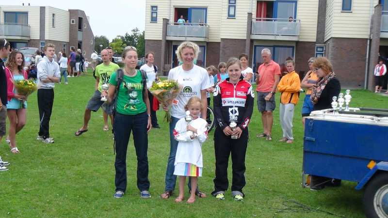
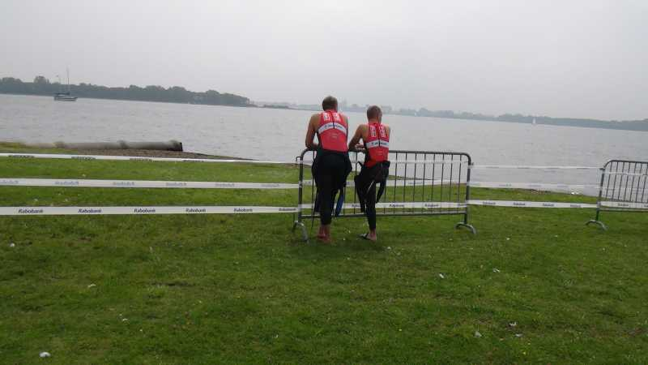

Op zaterdag 6 augustus werd voor de 14de keer Schotsmantriatlon georganiseerd. Totaal 250 deelnemers aan de start waarvan drie SMO-Specialized atleten in deze Nederlandse wedstrijd. Belofte Linde Herreman stond paraat voor de 1/8 sprintafstand. Steven Haeck en Luc Goethals gingen voor de kwarttriatlon.
Hieronder kan je wedstrijdverslag vinden van Luc Goethals.
De weersvoorspellingen zagen er kantje boordje uit maar het is wel droog gebleven tot na de wedstrijd. Ginds starten heeft altijd wat weg van een vakantie gevoel. Het word dan ook georganiseerd op een vakantie domein met vakantie huisjes en camping mogelijkheden.

De zwemstart in het Veerse meer (zout water) was 500m heen en 500m terug. Linde had een super zwemtijd op de 1/8. Zij kwamen uit tegenovergestelde richting 500 m gezwommen.
Ik persoonlijk voelde me een bal in een kikkerspel, ik zwem normaal kaarsrecht maar dat kon ik niet ervaren van degene naast mij! Resultaat mijn bril liep in, niet zo leuk. Op het keerpunt gekomen was het water zo aan het klutsen dat je je bijna op je rug mocht draaien om geen water binnen te hebben, dit kwam ook door de felle zeebries. In het uitklauteren van het water mogen de matten van mij ietsje verder in het water liggen! Ik heb een snee aan mijn kleine teen en onderaan mijn voet opgelopen, niet te ernstig blijkbaar want ik heb het maar na afloop gemerkt (de verdoving van adrealine he).
In de wisselzone gekomen zag ik Steven net zijn paars kleurige ros nemen, dus ook vlug helm op en weg ermee. Een leuk fiets parcours van 10 km: dus 4 ronden voor de 1/4 en 2 voor de 1/8 met maar 2 bochten van 90° in, de rest moet je niet of nauwelijks afremmen, dus mooi in de beugels blijven liggen en vlammen. Steven had een gemiddelde van 40 km/u dus behoorlijk snel.
In het reglement zouden ze beter eens spreken van 5 à 6 fietsen tussen. 1 fiets is gemiddeld 1.70 x 6 = 10.20 m , dus als je eens in groep fiets, laat eens 5 clubgenoten tussen, je zult versteld staan van de afstand. Want er wordt meer op 2,5 fietsen gereden dan de wekelijke 10 m volgens de reglementering. Valt dan nog de enige controle motar door een ongeval uit de wedstrijd weg en je krijgt vrijspel. Hopelijk is het voor de referee goed afgelopen want het duurde even voor er een ambulance was. Het parcours was niet verkeersvrij. Iemand met een sleurhut heeft de motar gehinderd waardoor hij in de remmen is moeten gaan en pardoes tegen het asfalt is terecht gekomen.
Toen we van de fiets kwamen was Linde al aan het genieten van haar 2e plaats. Goed gedaan!
Het lopen verloopt al over een Camping waar je naar Nederlandse gewoonte met applaus en hier en daar een hapje getrakteerd wordt, wat ik niet afsla natuurlijk. Eens tussen de struiken hoorde ik de warme adem van een zekere Annelore, en ik denk dat mijn testosteron gehalte in gang schoot want ik kon een versnelling plaatsen waardoor ik niet meer werd bijgehaald en mijn 56e stek kon behouden in 2u22. Steven werd 15e in 2u05, uitstekend!
Wetende dat ik vorig jaar 2u14 had in gelijkaardige omstandigheden maar toen in volle voorbereiding van Almere en nu … puf … volgend jaar hopelijk beter, en zonder zere rug en magere wintertraining. Maar toch hebben we met zen allen genoten van deze wedstrijd in het Buitenland.
Uitslagen
http://people.zeelandnet.nl/aeromad/2011/triatlons/uschotsman.shtml
http://www.dynamica-triatlon.nl/